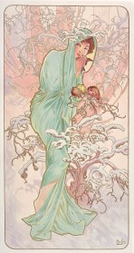
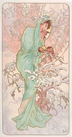

Mucha's 'Summer' captures the peak of the hot sun, portraying the most mature and sensual
female figure in the series. Adorned with red flowers in her hair, she leans with a weary,
languid expression, embodying both the languor and heat of a midsummer afternoon.
The lush leaves and calm pond in the background signify a moment overflowing with natural
abundance and vitality. Mucha primarily used bright golds and greens to visually realize
the sun-drenched vibrancy, showcasing a bolder and denser composition than the other seasons.
This is a prime example of Mucha's mastery in combining feminine beauty and natural energy
to create a sensory decorative effect admired throughout the Art Nouveau movement.
Solitude and Protection in Stillness, Winter
'Winter' concludes the series, depicted as a woman bundled in a thick white cloak,
huddled amidst a desolate, snowy landscape. While barren branches and cold snow dominate
her surroundings, the warm fur lining protects her from the harsh cold, creating a contrasting
image of protection within solitude.
Mucha uses a cool palette of blues and whites to convey the static and sublime beauty
of winter and inner stillness. This work represents the time of pause before the awaited
'Spring,' communicating the value of reflection and endurance rather than outward exuberance.
The simplified background and quiet placement of the figure in 'Winter' symbolize nature's
preparation for the revival of the next season, bringing Mucha's Four Seasons series to a perfect cyclical conclusion.

 
